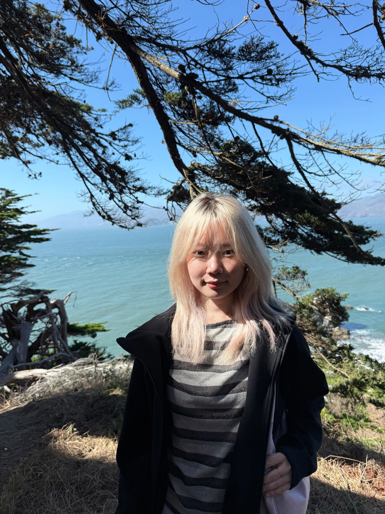
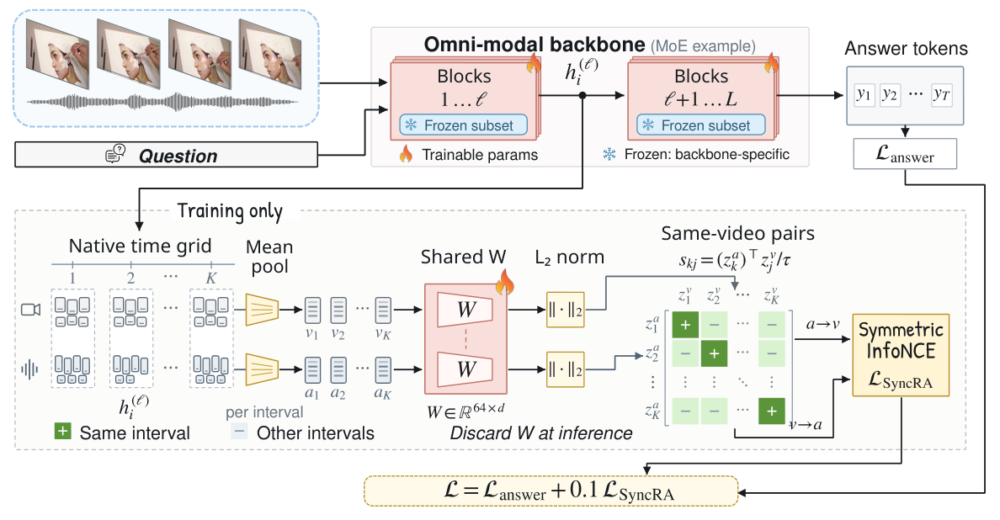

Image Denoising with Dispatch Diffusion Models
I am exploring diffusion-based inverse problem frameworks for imaging data, with a focus on denoising robustness and reconstruction quality.
Advisor: Prof. Ulugbek S. Kamilov

I am a master's student in the Department of Mathematics at the University of Wisconsin–Madison. I work as a research assistant in the Computational Imaging Group with Prof. Ulugbek S. Kamilov.
My current research studies image denoising with dispatch diffusion models, including diffusion-based approaches to inverse problems. I am interested in making image reconstruction more robust and reliable. Before coming to Wisconsin, I studied applied mathematics and financial engineering at The Chinese University of Hong Kong, Shenzhen and worked on computer vision applications in healthcare.
Current focus: diffusion models for image denoising and computational imaging.

A lightweight representation-alignment method that helps omni-modal models match audio and visual events in time, using timing information already present in video data.
Omni-modal models can process both audio and video, but they may connect a spoken event to the wrong visual moment. SyncRA addresses this temporal mismatch by aligning intermediate audio and visual representations from matching time intervals while separating representations from different intervals in the same video. The method uses timing already present in the input, requires no extra annotations, and does not change inference. Evaluations across four open omni-modal models and five public video benchmarks show consistent gains over answer-only fine-tuning, including better responses when audio–visual pairings change.
I am exploring diffusion-based inverse problem frameworks for imaging data, with a focus on denoising robustness and reconstruction quality.
Advisor: Prof. Ulugbek S. Kamilov
I used YOLOv8 for pill detection and jaundice-related image analysis, reproduced segmentation models, and developed hand and pose landmark methods to support facial privacy protection.
Advisor: Dr. Haofeng Li
I led a course project that combined GAN inversion with iris-color comparison. In our evaluation, the method improved detection accuracy by 10%, and we examined fairness across race and gender groups.
Our team built a PageRank- and LSTM-based framework for predicting novel characters' MBTI types using network centrality and dialogue length.
Coursework includes real analysis, stochastic calculus, and partial differential equations.
Previously majored in Financial Engineering. Dean's List, 2021–2025.